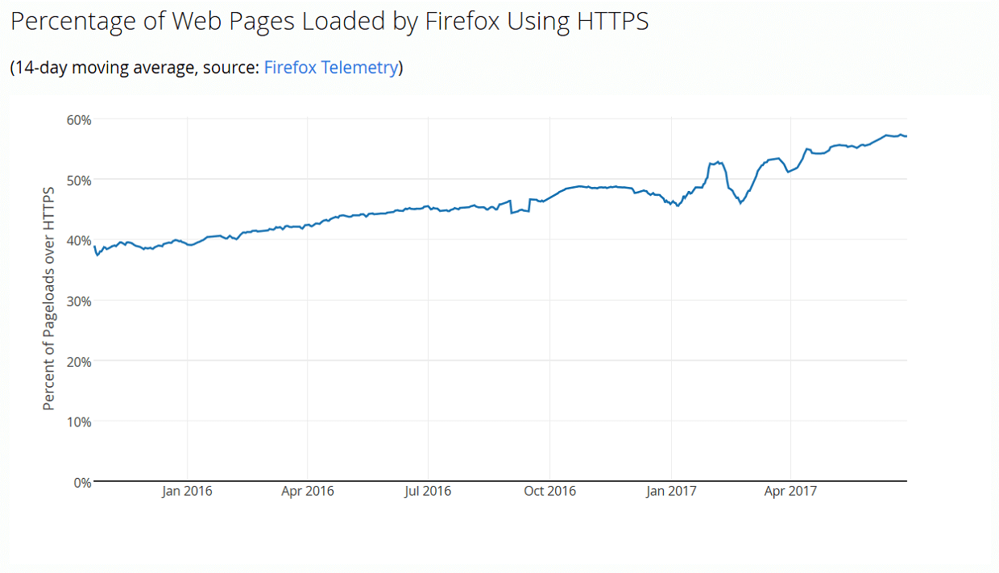

HTTPS Required
( 5 min read )
Its 2017, and we’re halfway to encrypting the entire internet.

Source: https://letsencrypt.org/stats/
This is huge. Our internet communications are becoming more encrypted every day using HTTPS, also known as HTTP over TLS/SSL or HTTP Secure. The free Certificate Authority, Let’s Encrypt, is partly responsible because of their free service. But there is an undeniable shift in how we use the internet for our everyday lives. We depend on it more and more. And we should take care in securing it.
Wait, what’s HTTPS? Well HTTPS protects you by encrypting your data in transit. It establishes trust that the page data you see is authentic and that anything you enter, username/password/etc, is not being stolen by packet-sniffing thieves. Insecure HTTP does none of that.
Why should HTTPS be required? Well I actually think it should be the default. It’d be nice to redirect HTTP traffic to HTTPS automatically everywhere as well. In case anyone tries to accidentally use an insecure connection.
Encrypted communications protect your data and personal info when travelling across the internet. Nobody else sniffing the network can alter your data or steal it. Your email address, passwords, credit cards, and more are protected by encryption. There really is no reason we shouldn’t be using it for all our websites. We need to go beyond just online banking, corporate networks, or gasp just the login pages (Because thats not secure enough).
For Website Owners
There used to be common excuses that HTTPS requires more data bandwidth and CPU usage, but this is not significant on modern CPUs. Or that SSL Certificates are expensive. If you don’t like free SSL certificates from Let’s Encrypt, you can always buy one for about $10 from Namecheap. Which is about the price of a single lunch.
Google announced they will rank HTTPS sites higher than HTTP sites. This means if you don’t support HTTPS yet, your page rankings may soon tumble. I’m sure Bing, Yahoo, and others will follow suit eventually.
Up and coming HTTP/2 requires HTTPS. Well, the specs don’t require it, but all major browser vendors are forcing HTTP/2 over TLS. Meaning they will refuse HTTP/2 connections that are not secure. You can only keep the insecure HTTP communications if you stick wtih the old HTTP/1.1 protocol. So you’d effectively lock yourself in.
DNS provided HTTPS is not the same thing as regular HTTPS. Cloudflare flexible SSL is a great example of this, and while it is fantastically simple to use, its not 100% secure between you and the web server. Because a portion of the connection of your web traffic could be served over HTTP then back to HTTPS again, which negates the security entirely.
Remember to auto-forward regardless if your site uses HTTPS or not. (Tisk tisk, VentureBeat, CraveOnline, and more). Its a common mistake to not forward https <-> http or vice versa. Depending on which your website supports.
Also, enable HTTP Strict Transport Security in your website if possible. It informs browsers to use only use secure HTTPS requests to your site and provides additional security from downgrade-protocol attacks or cookie-hijacking. You could also combine this with Content Security Policy to prevent resources from unknown sites from loading in your page, to protect from cross-site scripting (XSS) attacks.
For Everyone Else
Use HTTPS Everywhere in your web browser (Firefox, Chrome) if you can. It helps automatically redirect you to a secure website if it exists, in case you accidentally click on a non secure link.
Finally, make it a habit to check for a “Green Lock” in your address bar. Avoid typing sensitive information on nonsecure websites. Protect yourself and your data from packet-sniffing thieves. But remember! HTTPS only protects data in transit. So if the web server or your device is compromised with malware, then HTTPS cannot protect your data.
Once we reach 100% HTTPS communications on the internet we can all rest a little bit more at night. By that time, all browsers will probably refuse HTTP connections and HTTPS will be required.
Published: Jun 29, 2017
Category: privacy